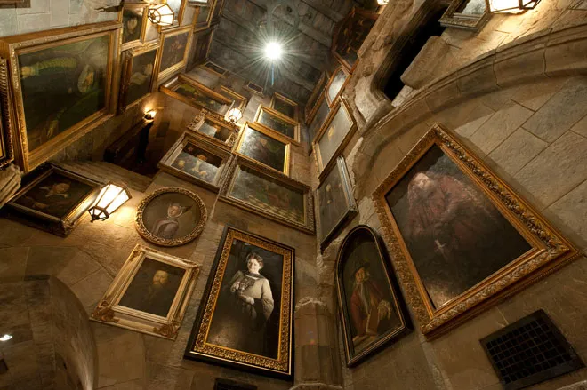

Activities
Visitors will aboard a special train at Platform 9 ¾, followed by a boat ride to the school grounds. From there you can visit and explore the wonders of the historical building Hogwarts, the nearby property and lake, the nearby town of Hogsmeade, but make sure not to go get too close to the Forbidden Forest!
Examine the Creatures of the Campus
Visiting the magical creatures with Hagrid is a thrilling and heartwarming adventure everybody should experience in their lifetime. With his boundless enthusiasm, Hagrid leads you through the grounds, introducing you to majestic Hippogriffs, mischievous Nifflers, and even the mysterious Thestrals. You can see his deep love for every creature as he shares stories. He may also encourage you to interact if you’re brave enough. It’s a wild, slightly messy, but utterly mind-blowing experience that leaves you with a newfound appreciation for mystical creatures.

Tour Inside the Castle
Walking through the Castle of Hogwarts is like touring a living storybook. Wandering past the enchanted staircases, talking portraits, and ancient classrooms filled with magical history. Every corner holds a secret, and with each step, you’d feel the wonder and mystery that makes Hogwarts truly unforgettable. Every piece of architecture, furniture, and art is filled with history and magic. Experience this once-in-a-lifetime opportunity while students are still out of school!
Visit Hogsmeade
Visiting Hogsmeade is like visiting a charming snow-dusted postcard with cobblestone streets winding between cozy shops and bustling pubs. The scent of fresh pastries from Honeydukes and the warm spice of Butterbeer from the Three Broomsticks filling the air. You can also browse magical wares at Zonko’s, admire enchanted quills at Scrivenshaft’s, and maybe even spot a Hogwarts student sneaking out under an invisibility cloak. Hogsmeade has so many different stores and activities to offer that it can fill a wizard’s whole day.